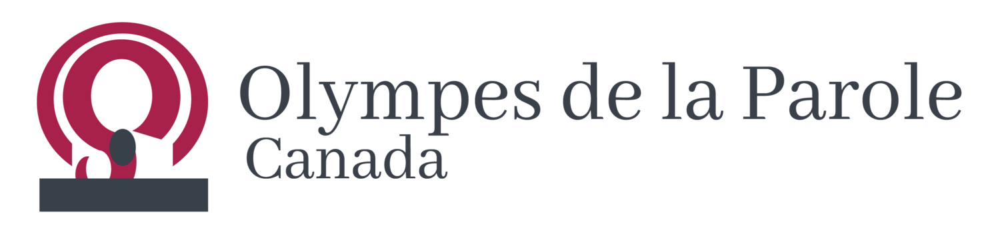
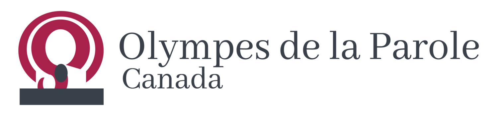
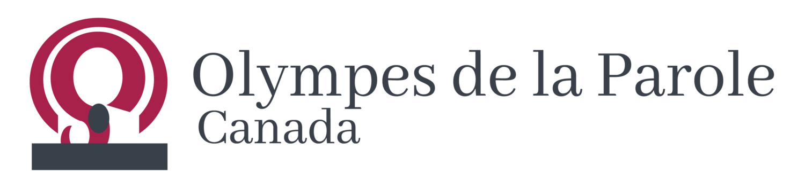
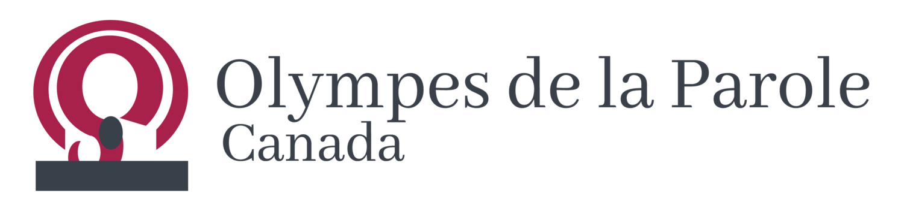

Women in Environmental, Social, Governance

Women in Environmental, Social, Governance

Women in Environmental, Social, Governance

Women in Environmental, Social, Governance

Becoming a member of the WESG community gives you free access to the WESG forum where meaningful and informational conversations surrounding numerous ESG topics happen. In the forum, you can gain more knowledge about ESG, discuss about the latest ESG related regulations, and ask questions to crowdsource advice that can help clear your confusions.
Currently, an increasing number of companies all over the world are starting to report on ESG meaning that advancements in ESG are highly encouraged. ESG reporting is, in certain countries, a voluntary endeavor focusing on helping businesses prove that they are making efforts in ethically improving the community (Rouen, 2022). Worth mentioning is that ESG reporting is developing and progressing rapidly and there is now an increasing demand for global regulations. At the moment, 29 countries and territories sustain mandatory ESG reporting regulations. For instance, in Malaysia, mandatory ESG reporting standards were introduced in 2016. The Philippines has maintained national ESG disclosure regulations since 2019. Their guidelines state that all publicly listed companies must submit an annual ESG report. The United Kingdom’s ESG reporting law declares that certain companies (such as those with an annual income higher than £500 million and with over 500 employees) are required to disclose their climate-related information. Additional directions in Section 172 of the Companies Act force companies to examine employees’ rights and disclosures (Yu, 2022). Most Canadian companies, especially public ones, have begun ESG reporting although it is not yet mandatory. In 2024, ESG reporting will become obligatory for all financial institutions in Canada, as outlined by the Trudeau government. Those financial institutions will face legal consequences if they do not follow the reporting guideline (Globerman, 2022). Altogether, the increasing adoption of ESG in the workspace is bringing a positive spotlight to gender equality and women empowerment.
All registered users of the forum and view and access all posts and discussions.
Yes, users are free to link websites in their posts and discussions. However, We have no control over and assume no responsibility for the content, privacy policies or practices of any third party sites or services.
To start a new post, click on the "New Topic" botton at the top right corner of the forum as shown in the picture below.
Users must be 18 or older. No one under 18 of age may use the Service.
To change the account profile information, click on the avatar on the top right corner of the forum. Then, click on the "Preferences" button to make modifications.
If you encounter any problems about the usage of the forum, please contact the WESG team through email: wesg@thestudy.qc.ca
Yes, users have the ability to delete any of their previous posts by clicking on the "Trash" button as shown in the picture below.